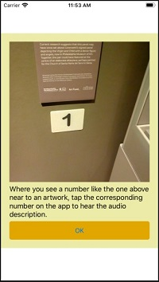
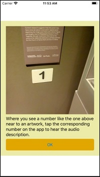
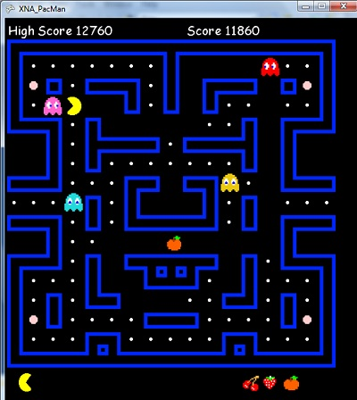

Computer programmer, learner and supporter of creative computing.
In my work with Hull Culture and Leisure I have developed a touchscreen interactive using HTML, JavaScript and CSS which can run on a Raspberry Pi. This menu driven interactive was developed as part of the Ferens Art Gallery Interpretation Group and is designed to increase visitor engagement with the gallery by providing information about T R Ferens, the industrialist and philanthropist who funded Ferens Art Gallery.
This interactive was developed using Visual Studio Code, with GitHub used as source control. It's also published using GitHub pages so that it could be shown to colleagues for feedback. On the Raspberry Pi, it is loaded on start up by Chromium and viewed full screen in kiosk mode. This is achieved with changes to the autostart file. There is a useful guide on how to do this on the Library Makers Website.
Explore the T R Ferens interactive by clicking on this link.
I developed this app to provide an enhanced visitor experience to visitors to Ferens Art Gallery. Developed as part of the Ferens Interpretation Group, it provides an audio description of selected works of art throughout the gallery.
This app was developed using Visual Studio 2019 and Xamarin, with GitHub used as source control. It uses the Xamarin.Forms MediaElement
 

As a primary school teacher I used to take my Year 6 class on a trip to York. We would visit a museum and then take a walk along the walls, stopping at various places of historic note along the way. The idea for this app came about as a way of providing historical information about points of interest around the walls. It uses GPS to locate the user and then gets a map with the nearby points of interesting marked. Tapping on these brings up the historic information.
I developed this app while at Seed Software as my personal project using Visual Studio 2015. Getting the nearby places of interest using GPS was a challenge and a rewarding activity.
Pacman has been my favourite arcade game for quite a few years and after learning XNA at Hull University, I decided to use it to produce my own version of Pacman.
This project was quite a challenge and involved a lot of work but I was very pleased with the result. I was determined to get the ghost behaviour correct and found a useful guide at Game Internals which helped me achieve this.
I think making games is a good way to get young people involved in coding and supports the ideas behind creative computing. I learnt a lot making this game and, although it was hard, had great fun while doing so.
